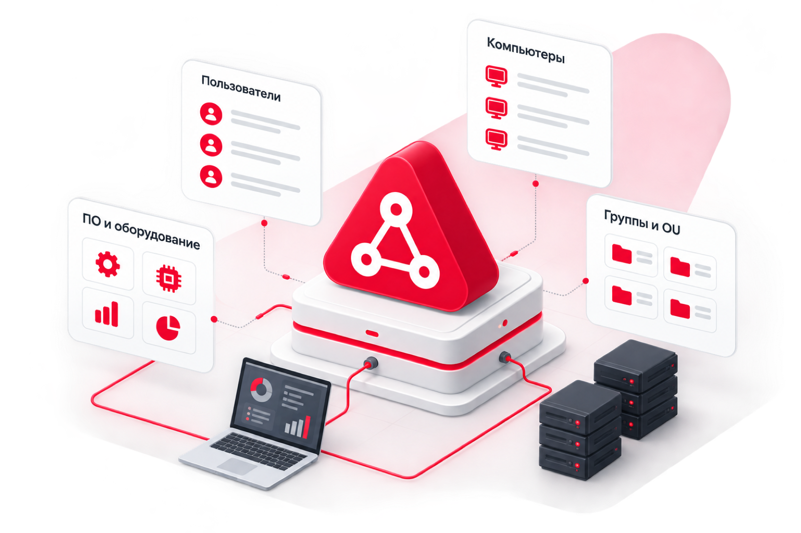
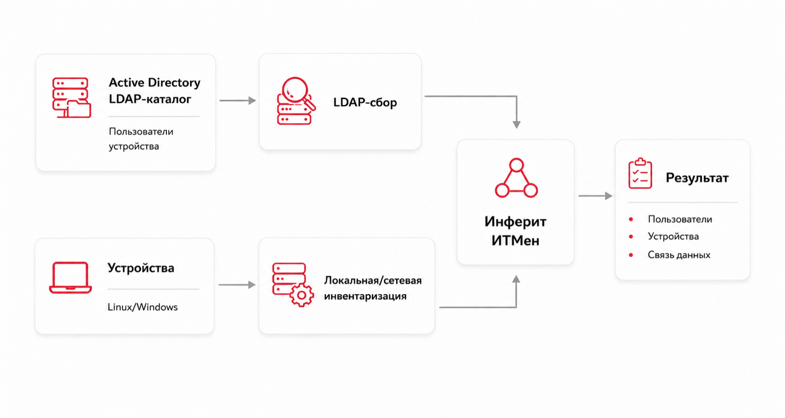

В реестре российского ПО
Инвентаризация Active Directory: учёт компьютеров, пользователей и ПО домена
- Актуальные данные из домена: компьютеры, пользователи, сведения об OU и группах и другие доступные атрибуты по LDAP/LDAPS
- Дополнение данных AD результатами локальной и сетевой инвентаризации: железо, ПО, сетевые параметры
- Учет устройств вне AD и создание единого контура для CMDB/ITSM/ITAM

2011
Применяется в бизнесе с 2011 года
Запуск за 8 часов
Масштабируется без затрат
API
Открытое API для интеграции
Год бесплатной техподдержки
Вам подойдет решение, если:
Нужно автоматически получать актуальный список компьютеров и пользователей из домена
Инфраструктура состоит из нескольких доменов или филиалов, а учёт нужен единый
Важно видеть не только то, что заведено в AD, но и устройства вне домена
Данные из AD нужно объединять с данными из других источников и можно передавать в CMDB/ITSM
Как работает сбор данных из Active Directory
1
Подключение к Active Directory
- Подключение к контроллеру домена по LDAP или LDAPS
- Настройка фильтров для ограничения области сбора, в том числе по нужным организационным единицам (OU)
- Получение объектов и доступных атрибутов Active Directory
2
Сбор и нормализация
- Сбор данных из Active Directory
- Дополнительный сбор данных с самих узлов
- Идентификация и объединение данных из разных источников
- Приведение данных к единому формату
3
Передача данных
- Готовые данные могут передаваться в CMDB, ITSM, ITAM, SAM и другие внешние системы

Что ИТМен собирает из Active Directory
Каталог AD даёт список компьютеров, пользователей и структуру домена. Этого мало для полной инвентаризации ИТ-активов, поэтому ИТМен дополнительно опрашивает сами узлы.
Из каталога Active Directory
- Компьютеры, пользователи и доступные сведения каталога, включая OU и группы
- Доступные атрибуты пользователей, компьютеров и других объектов Active Directory
- Расположение, описание, информация об ОС и другие доступные атрибуты, если они заполнены в Active Directory
С самих узлов
- Конфигурация: процессор, память, диски, сетевые адаптеры (IP, MAC, DNS-имя)
- Установленное ПО и версии — для контроля лицензий и учёта ITAM/SAM
Работа с масштабом
- Несколько доменов и лесов одновременно, в единой базе
- Дополнительная агентская и сетевая инвентаризация устройств, включая использование WinRM, WMI, SSH и SNMP
Сопоставление данных из разных источников позволяет учитывать как устройства из Active Directory, так и оборудование, обнаруженное в инфраструктуре другими способами.
Соответствие требованиям информационной безопасности
Работает в закрытых периметрах, без выхода инфраструктуры в интернет
Подключение к каталогу по защищённому каналу, включая LDAPS
Поддержка протоколов шифрования по ГОСТ
В реестре российского ПО: №2016662248, запись №12289 от 14.12.2021
Разработка без Open source, вся команда и инфраструктура в России
Частые вопросы
Чем сбор данных через AD отличается от аудита Active Directory?
ИТМен инвентаризирует ИТ-активы: оборудование, ПО и пользователей на основе данных домена. Аудит прав доступа и настроек безопасности AD он не проводит.
Нужны ли агенты для сбора?
Для выполнения LDAP-задачи используется агент ИТМен с функцией сетевой инвентаризации. Устанавливать его на каждое устройство домена не требуется. Для дополнительной инвентаризации самих устройств могут использоваться локальные и сетевые методы сбора.
Можно ли собирать данные из нескольких доменов?
Да. Данные из нескольких доменов и лесов сводятся в единую нормализованную базу.
Видит ли ИТМен устройства вне домена?
Да. Сетевая инвентаризация ИТМен позволяет обнаруживать устройства, которые присутствуют в инфраструктуре, но не заведены в Active Directory.
Можно ли синхронизировать не весь домен, а отдельные OU?
Да. Область сбора можно ограничивать с помощью LDAP-фильтров, в том числе для получения данных только по необходимым организационным единицам (OU).
Поддерживается ли защищённое подключение к каталогу?
Да. Для работы с контроллером домена используется LDAP, при необходимости — защищённый канал LDAPS.
Что происходит, если устройство уже было обнаружено другим способом?
Если устройство совпадает с существующим объектом по настроенным атрибутам идентификации, данные Active Directory дополняют существующую карточку. Если совпадение не найдено, создается новый объект.
Работает ли сбор в закрытом контуре без выхода в интернет?
Да. ИТМен разворачивается внутри периметра и собирает данные из Active Directory без внешнего подключения, с передачей по защищённым каналам.
Чем ИТМен отличается от зарубежных программ инвентаризации?
Это российское решение из реестра ПО — аналог Lansweeper и Total Network Inventory, работающий в закрытом контуре и без Open source-компонентов.
Получите демо Инферит ИТМен
Покажем сбор данных из Active Directory и как выстроить единый контур для CMDB, ITSM и ITAM.